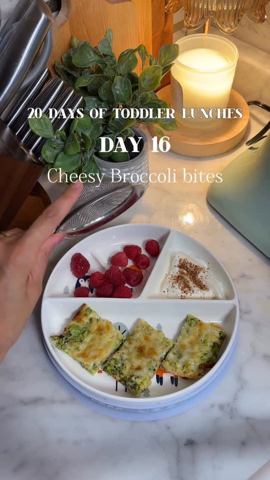

Cheesy broccoli bites

Ingredients
- 250g broccoli
- 3 eggs
- ¼ cup breadcrumbs
Steps
- Steam broccoli
- Mash
- Mix with eggs & breadcrumbs
- Bake at 375°F / 190°C for 20 min
Recipe text as written by @soniamazri_ in their tiktok caption. Open original